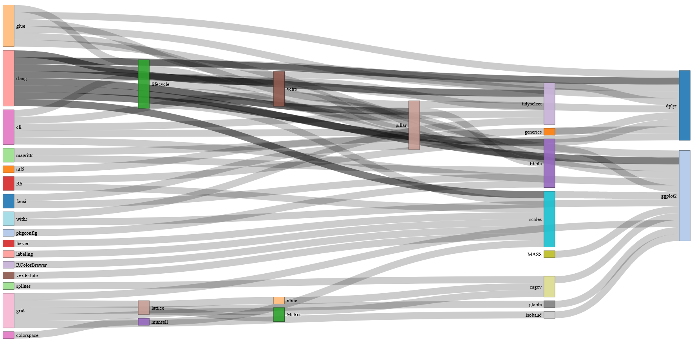
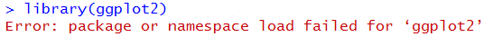
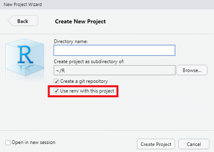
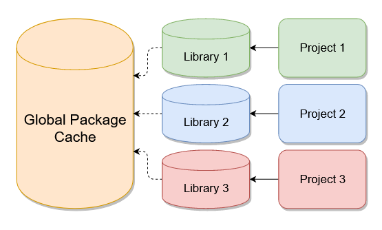
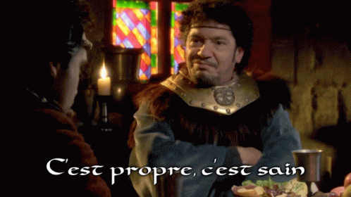
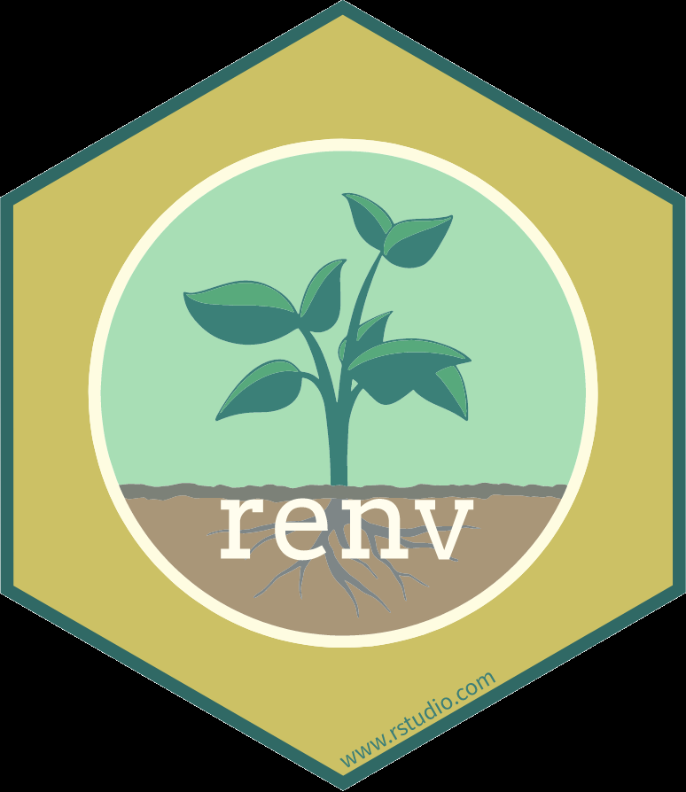
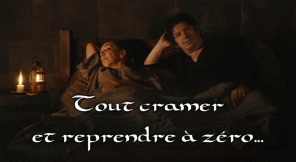

Présentation de {renv}
Survivre aux montées de version des packages R
Jocelyn Béziau
Pise
07 novembre 2022
Pourquoi s’inquiéter de la version de nos packages ?
Exemple sur dplyr
🥰 Des fonctionnalités nouvelles
🥰 Des bugs corrigés
🥶 Des fonctions qui disparaissent
🥶 Des comportements par défaut qui changent
🥶 Des warnings qui deviennent des erreurs (bloquantes)
Les packages s’insèrent toujours dans un éco-système, plus ou moins stable et plus ou moins complexe

☣️ install.packages() installe toujours la version la plus récente disponible
☣️ (ré-)installer un package met à jour ses dépendances (par défaut)
☣️ l’état de notre répertoire de packages (.libPaths()) n’est pas forcément stable

- Solutions manuelles :
Quels packages sont chargés dans ma session R ? Dans quelle version ?
Isoler les répertoires de packages pour chaque projet
Prise en main de {renv}
Que permet {renv} ? Gérer localement les dépendances dans les projets R et les rendre :
- Isolés (pas d’effets de bords sur les autres projets)
- Portables (partage des versions des dépendances)
- Reproductibles (snapshot & restore)
Dans RStudio :

ou
Travailler avec git et renv ?

Il suffit d’avoir dans le dépôt git :
renv.lock(versions des packages à installer)renv/activate.R(activation de renv avec les bons paramètres).Rprofile(lancer automatiquement le script précédent à chaque nouvelle session)
et de lancer renv::restore() une fois le dépôt cloné !
Puis renv::snapshot() si nécessaire, et commit/push comme d’habitude (attention aux conflits sur renv.lock)
Travailler avec Python et renv ?
C’est possible (mais pas sur AUS a priori) => SSPLab
On peut utiliser renv::use_python() pour ajouter un environnement Python dédié au projet :
reticulate::py_install()installera les modules Python dans cet environnement
renv::snapshot()capturera les modules Python dans un fichierrequirements(en parallèle des packages R sauvés dansrenv.lock), qui pourront être téléchargés “comme d’habitude” viarenv::restore()
Fonctionnalités avancées
- Optimiser (ou pas) l’espace disque et les temps d’installation

- Déduire automatiquement quels packages sont utilisés dans le projet
Est-ce la panacée ?

😵 Pas de gestion des dépendances système (version de R, de l’OS, …) => docker !
🤯 {renv} reste un package, donc soumis aux règles de cycle de vie vues au début !
☠️ si les packages nécessaires ne sont plus disponibles sur le dépôt d’installation, ils ne pourront pas être installés !
Pour aller plus loin
- 🇫🇷 Package renv : présentation et retour d’expérience, Élise Maigné
- 🇬🇧 Introduction to renv, Kevin Ushey
- 🇬🇧 renv : Project Environments for R - rstudio::conf(2020), Kevin Ushey (20min) et diaporama associé
- 🇬🇧 renv sur le CRAN et vignette de présentation
- 🇬🇧 Using renv with Docker
Place aux questions !
Merci pour votre attention ~

Présentation de {renv} - Survivre aux montées de version des packages R
Comment garantir la reproductibilité de nos travaux ?
